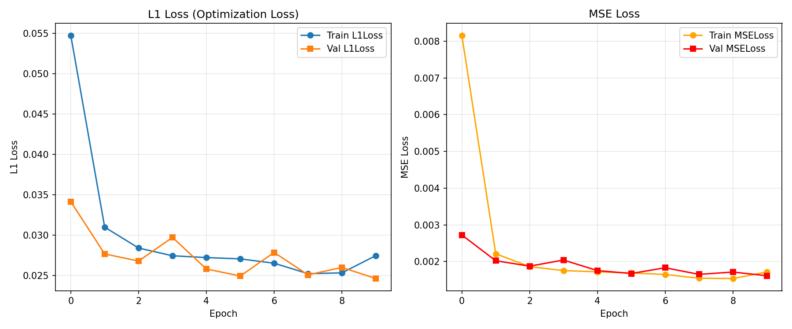

01Results
I evaluated the models with two metrics: PSNR, which measures pixel-level mathematical accuracy, and SSIM, which measures perceived structural similarity (closer to how a human sees an image). The comparison shows a trade-off between them.

- PSNR (Peak Signal-to-Noise Ratio) compares raw pixel values; higher means the reconstruction is numerically closer to the original. The MSE-trained model won on PSNR, as expected, since it directly minimizes the error PSNR is based on.
- SSIM (Structural Similarity Index) compares texture, structure, and contrast; higher means the image looks more natural to the eye. The L1-trained model won on SSIM, recreating the sharp edges and textures people perceive as high quality.
02Model architecture
- Feature extraction
- A single convolutional layer reads the input image and extracts its initial low-level features.
- Deep feature learning
- A series of 8 residual blocks. Residual connections let the network go deep enough to learn complex features without suffering from vanishing gradients.
- Upsampling
- Instead of a transposed convolution, an
nn.PixelShufflelayer first increases the number of channels and then rearranges them into the spatial dimensions, giving a clean, high-quality upscale.
03Training
- Dataset
- A large dataset of high-resolution images with various downsampling factors.
- Optimizer
- Adam with learning-rate scheduling for stable convergence.
- Batch size
- Chosen for memory efficiency while keeping training stable.
- Precision
- bfloat16 (BF16) automatic mixed precision.
- Epochs
- Multiple epochs with early stopping to prevent overfitting.
Choosing L1 loss
A key decision was the loss function. The common MSE (L2) loss is easy to optimize, but it heavily penalizes large errors, which pushes the model toward a safe, blurry average.
I hypothesized that L1 loss (mean absolute error) would perform better. L1 is less sensitive to outliers and is known to preserve sharp details and realistic textures, which is the whole goal of super-resolution.

04Testing the hypothesis
The loss curves show that both models learned, but not which one is better. To find out, I evaluated the L1-trained and MSE-trained models on the full test set.
| Metric | L1 model | MSE model | Winner |
|---|---|---|---|
| PSNR (dB) ↑Mathematical accuracy | 29.96 | 30.51 | MSE |
| SSIM ↑Perceived structural quality | 0.8307 | 0.8282 | L1 |
The MSE model won on PSNR, as expected for an MSE-based metric. The L1 model won on SSIM, showing that it does a better job at the actual goal: recreating the sharp structures and details a human eye perceives as high quality.
05Why it matters for medicine
These findings matter for fields like medical imaging. In a diagnostic setting, a model that produces a blurry, mathematically safe average (high PSNR) can be dangerous: it may smooth over exactly the details a diagnosis depends on, such as a hairline fracture or the sharp boundary of a small tumor.
This project offers quantitative evidence for optimizing toward L1/SSIM in those settings, and points toward more reliable, perceptually accurate models for healthcare.
06Status
This project is still being improved. Code will be linked here soon.